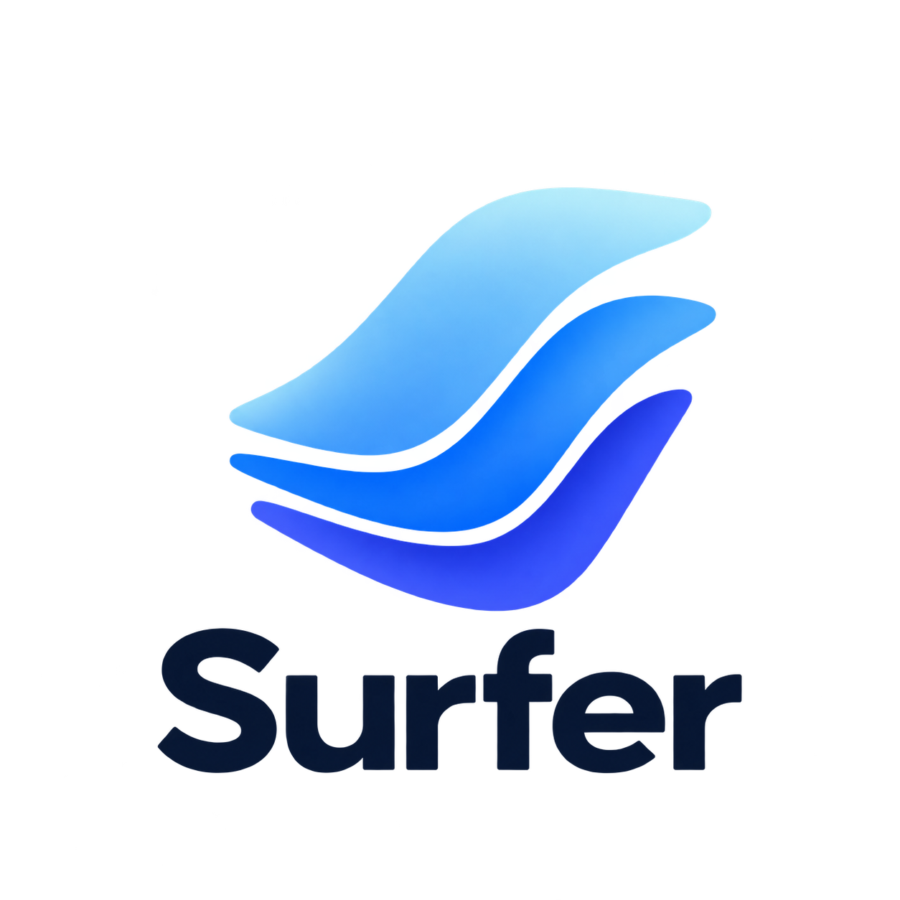
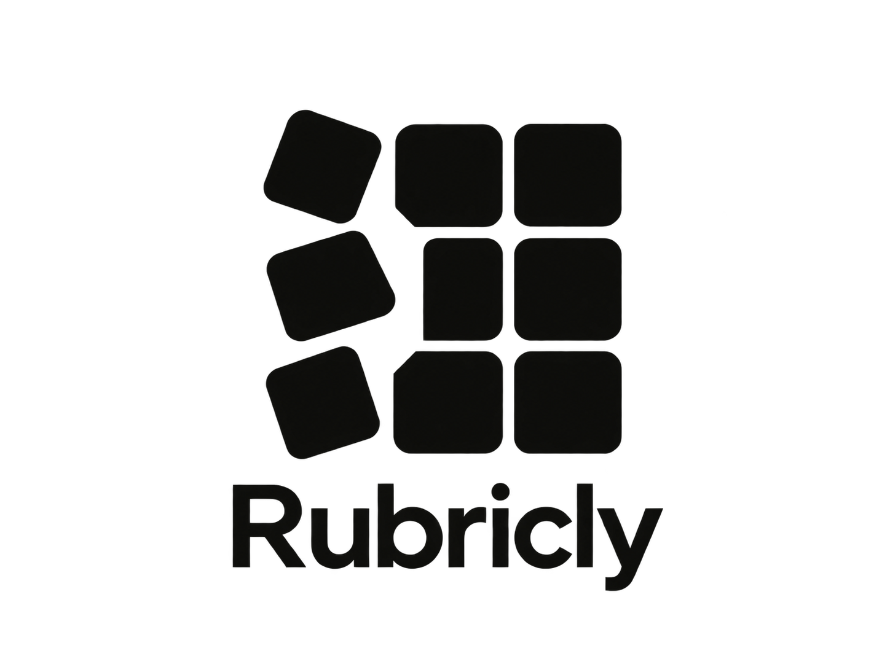

Ideas don’t move in straight lines.
Nonlinear Flow is an independent product workshop where I build small software products, experiments, and tools.
Explore productsThings taking shape

Surfer
Turns your documents into a living, queryable knowledge workspace — for people and AI agents.

Rubricly
Define what good looks like for AI products.